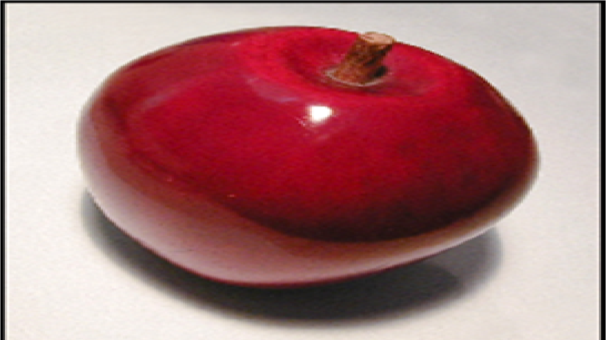

|  | Apple are good for health |
| Under most conditions, apple trees will set more fruit than needed for a full crop Most apple cultivars will retain this heavy set of fruit thoughout the growing season resulting in small, poorly colored, low quality fruit. Thinning is removal of a portion of the crop before it matures on the tree to increase the marketability of remaining fruit and to reduce the biennial bearing tendency of the tree. | |